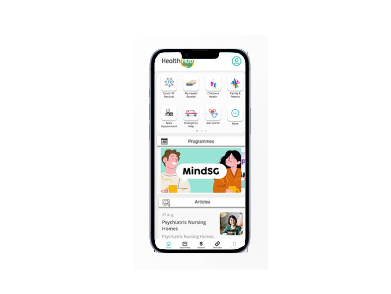
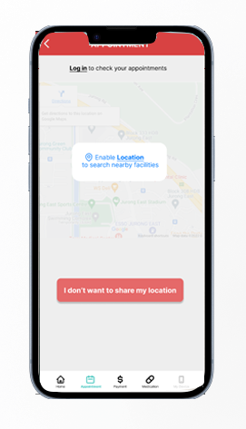

Design only
Healthub UI case study + revamp
This initiative aimed to enhance the user experience of the HealthHub app, a popular health platform in Singapore. The end goal of this project will be to create high-fidelity prototypes, addressing usability concerns, and optimizing key features to improve overall user satisfaction. Project Goals Objective: To redesign HealthHub for improved user engagement and satisfaction. Key Focus Areas: Usability, UI/UX enhancements, feature optimization. Hypothesis: Improved UI/UX designs, and additional features will attract more users and improve overall user satisfaction.
donwload detailed design thinking processTechnologies used
- Figma
- Miro

